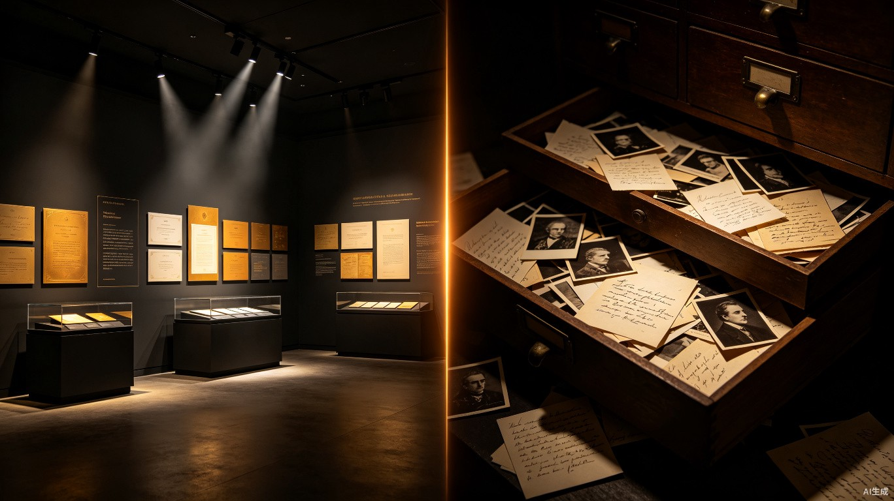
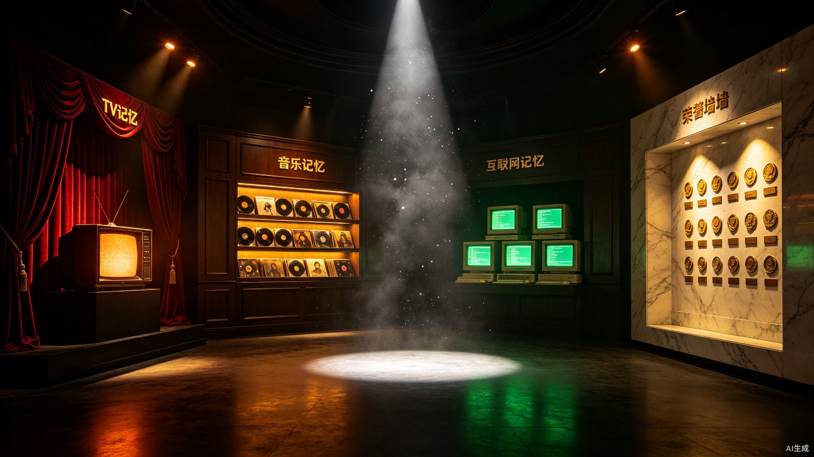
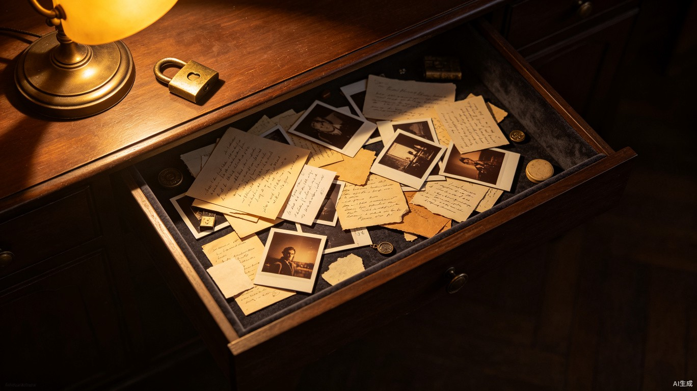

时光博物馆
公开展览区 & 私藏匣
界面设计规格书 — 视觉风格、色彩系统、排版逻辑与文案体系
00 / 设计总纲
两种截然对立的设计哲学，映射「自我策展」与「自我接纳」的区别。

左：公开展览区的秩序之光 | 右：私藏匣的混沌暗影
时光博物馆不是一个均质的列表，而是两种心理空间的并置。公开展览区是馆长精心挑选的藏品——那些愿意被看见、被共鸣的记忆。它需要仪式感和策展美学。而私藏匣是另一个极端——那些无法归类、不愿示人、模糊破碎的碎片。它不需要被理解，只需要被接纳。
这两者的设计必须严格对立。公开区是秩序，私藏匣是混沌；公开区是明，私藏匣是暗；公开区的 AI 是博学馆长，私藏匣的 AI 是沉默挚友。
01 / 公开展览区 — 沉浸式策展风
不要像列表，要像真实的博物馆展厅。每一步都应感到脚下有回廊的回声。

概念氛围：四大展区各自呈现独特的材质与光影语言
Curated Immersion（沉浸式策展风）。整体基调是暗底暖光——环境光刻意压低，像真正的博物馆展厅，只有在凝视某件藏品时，光线才会凝聚。页面不使用均质的卡片网格，而是模拟不同展厅的材质切换：丝绒、木材、金属、大理石。每进入一个展区，背景纹理、光源色温、卡片质感都会发生微妙变化。
全局环境光
默认状态下，整个展厅笼罩在低照度暖光中。模拟博物馆走道的漫反射光，亮度约为 15-20% 的白色面板。当用户开始滚动或鼠标悬停时，环境光会缓慢跟随，制造出「光在展厅中游走」的感觉。这一效果通过 CSS radial-gradient 跟随 mousemove 事件实现。
尘埃粒子
保留并增强现有的 18 粒尘埃飘落效果。粒子使用 #b08d57（金色）色，从顶部缓缓坠落，模拟博物馆光线中可见的微尘。粒子需增加横向漂移幅度，使轨迹更接近真实空气中的悬浮态。
02 / 公开展览区 — 色彩系统
暖棕-金色的博物馆基调，每个展区在此基础上叠加一层专属色温。
展区专属色温叠加
| 展区 | 背景色偏移 | 光源色温 | 卡片材质 |
|---|---|---|---|
| 光影记忆 | #4a2028 | 暖红偏移，simulating stage light | 丝绒深红 (#8B1A1A) + 金边 |
| 声纹记忆 | #3a2e1a | 琥珀偏移，simulating warm lamp | 深胡桃木 (#5C4033) + 金属铭牌 |
| 数字足迹 | #1a2e1a | 冷绿偏移，simulating CRT glow | 深灰塑料 (#2A2A2A) + 荧光绿 (#33FF33) |
| 荣誉墙 | #3a3530 | 中性暖白，simulating gallery track light | 大理石白 (#F5F0E8) + 金色浮雕 |
03 / 光影记忆 — 电视剧展区
老式胶片放映厅或复古电视墙。深红丝绒幕布质感。
设计隐喻：20 世纪末中国家庭客厅里那台显像管电视，和窗帘拉上后电影院里丝绒幕布缓缓拉开的一瞬间。
背景纹理：深红丝绒质感，使用 CSS repeating-linear-gradient 叠加微噪点模拟绒面。底色 #4a2028，叠加层 rgba(139,26,26,0.15) 的 45 度条纹纹理。
卡片样式： VintageCard 维持杂志风 280x320 规格，但增加胶片齿孔装饰——卡片上下边缘各加一排半圆凹口（CSS radial-gradient 或 mask-image），模拟 35mm 胶片条。图片区顶部叠加一层扫描线效果（CSS repeating-linear-gradient，间距 2px，透明度 3-5%）。
年份标签：保持现有 rotate(-3deg) 邮戳样式，但背景色改为 #8B1A1A（深红），文字白色，模拟胶片日期标注。
展区入口：进入该展区时，页面顶部缓慢展开一道「幕布」过渡动画——从中间向两侧拉开，露出丝绒红色背景。幕布使用 #6B1515 深红，带有横向褶皱纹理。
04 / 声纹记忆 — 音乐展区
黑胶唱片店或磁带墙。木质和金属的厚重感。
设计隐喻：放学后钻进街角唱片店的下午，架子上堆满了牛皮纸封套的黑胶唱片，角落里一台旧磁带随身听正在播放。
背景纹理：深胡桃木纹理。底色 #3a2e1a，叠加层使用 CSS linear-gradient 模拟木纹走向（水平方向，色相在 #4a3820 和 #2a1e10 之间微弱波动）。纹理使用低透明度（opacity: 0.08-0.12），不压过卡片内容。
卡片样式：在 VintageCard 基础上，将卡片边框替换为金属质感。使用 border: 1px solid #8B7355 配合 box-shadow: inset 0 0 0 1px rgba(139,115,85,0.3), 0 4px 12px rgba(0,0,0,0.15)，模拟唱片封套的金属边框。卡片底部增加一个迷你唱片标签圆形（CSS border-radius: 50%，直径 24px），背景色为 #b08d57，上面显示曲目序号。
音乐播放：保留现有 MiniPlayer 的 iframe 播放方式，但 MiniPlayer 的外壳应改为磁带播放器造型——圆角矩形外壳，深棕底色，中间显示当前播放的「磁带标签」（白色矩形 + 歌曲名）。
05 / 数字足迹 — 网络展区
赛博复古风。Windows 98 荧光绿界面或老式网吧电脑桌面。
设计隐喻：2005 年的网吧——CRT 显示器的荧光绿光照亮了少年的脸，键盘是又厚又沉的那种，屏幕上的网页还带着闪烁的 GIF 动画和 visitor counter。
背景纹理：深灰底色 #1a2e1a，叠加CRT 扫描线效果——水平条纹间距 3px，颜色 rgba(51,255,51,0.03)。四角叠加暗角效果（CSS radial-gradient，从 transparent 到 rgba(0,0,0,0.4)），模拟 CRT 显示器的边缘畸变。
卡片样式：VintageCard 边框改为 1px solid #33FF33（荧光绿），卡片内边距增加 2px 的内嵌绿色高光（box-shadow: inset 0 0 0 1px rgba(51,255,51,0.15)）。图片区叠加一层 sepia(0.3) hue-rotate(80deg) 的滤镜，把图片推向冷绿色调。年份标签改为等宽字体 + 绿底，模拟终端命令行输出。
特殊效果：该展区内的卡片在 hover 时，不使用常规的 scale/translate 效果，而是触发一个「信号干扰」——图片短暂抖动（CSS translate 随机偏移 ±1px，持续 200ms），模拟 CRT 信号不稳。
字体：该展区的标题和标签字体切换为 'Courier New', monospace，模拟老式电脑的像素字体感。其他区域保持衬线体。
06 / 荣誉墙 — 成就展区
实木浮雕或大理石墙面。勋章要有金属光泽和投影。
设计隐喻：政府机关走廊里那面挂满锦旗和奖牌的荣誉墙，或者是某个人书房里精心排列的奖杯柜。这是整个博物馆中最庄重的空间。
背景纹理：大理石白纹理。底色 #F5F0E8（暖白大理石），使用 CSS radial-gradient 叠加不规则的大理石纹路（色值在 #EDE5D8 到 #DDD5C8 之间缓慢过渡）。这是四大展区中唯一一个浅色背景的展区，形成强烈的明暗对比——进入荣誉墙，就像走入一条被追光灯照亮的走廊。
卡片样式：HonorCard 维持垂直时间轴布局，但增强金属质感。卡片边框升级为 2px solid rgba(176,141,87,0.8) + box-shadow: 0 2px 20px rgba(176,141,87,0.3), inset 0 1px 0 rgba(255,255,255,0.6)，制造浮雕效果。图片区的 48px 缩略图外圈加一个金属光环（border: 2px solid #b08d57 + box-shadow: 0 0 8px rgba(176,141,87,0.6)），模拟奖牌。
时间轴：升级现有金色渐变轴线，增加「刻度标记」——每个节点不仅是一个圆点，而是一个微微凸起的金属钉（CSS box-shadow 制造 3D 浮起感 + inset 制造顶部高光）。
进入过渡：从暗展区进入荣誉墙时，执行一个「灯光渐亮」过渡——背景从深棕渐变到大理石白，耗时 800ms，使用 CSS transition。这一过渡不应使用页面跳转，而是滚动时的视差渐变。
07 / 公开展览区 — 交互细节
聚光灯效应、AI 馆长侧写、借展分享。每一个交互都应像博物馆中的观展行为。
聚光灯效应（Spotlight Effect）
这是公开展览区的核心交互范式。默认环境光较暗（约 15-20% 亮度），当用户点击或长按某件藏品时，触发聚光灯效果：
radial-gradient，中心 #FFF8E7，边缘 transparent，直径约 400px），使用 CSS opacity 从 0 过渡到 0.7（耗时 600ms，ease-out）。
filter: brightness(0.3) 或 opacity），制造景深虚化效果。过渡耗时与聚光灯同步。
transform: translateY(-8px)），并展示完整信息（描述全文、播放按钮、馆长侧写等）。关闭详情时，聚光灯和暗化同步收回。
AI 馆长 — 文学性侧写
界面右下角（或卡片详情面板的角落）有一个微小的「馆长帽」图标（SVG，约 24x24px，金色 #b08d57），常态为半透明静置状态。
当用户点击藏品后展开详情，馆长帽图标旁出现一个「生成侧写」的小按钮。点击后，AI 生成一段文学性侧写，以一段话描述这件藏品在馆长生命中的位置。例如：
侧写文字以胶片感排版呈现：衬线体、暖白文字、行距拉宽至 2.0，每段开头缩进两字符。文字缓缓浮入（opacity 从 0 到 1，耗时 1200ms）。
借展分享（Lending Exhibition）
点击分享按钮后，生成一张极简海报。海报内容严格限定：
| 元素 | 规范 |
|---|---|
| 藏品图片 | 居中展示，宽度占海报 80%，带 sepia(0.15) 复古滤镜 |
| 用户手写体批注 | 卡片描述文字，使用手写风格字体（如 Ma Shan Zheng 或 ZCOOL XiaoWei），暖棕色 |
| 动态文案 | 海报底部：「来自[用户名]的时光博物馆」+ 展区名称 |
| 海报背景 | #FAF8F3 暖白底，带微噪点纹理 |
| 海报尺寸 | 1080 x 1350px（Instagram 竖版比例 4:5） |
08 / 公开展览区 — 文案体系
每一段文案都应像博物馆的展板文字——克制、诗意、有距离感。
欢迎来到你的展览。
这里陈列着你精心挑选的记忆——
每一件都经过你的同意，才得以面世。
显示在展厅入口的幕布拉开后，字号 20px，居中，衬线体，2s 后淡出。
这面墙上还没有挂上任何影像。
也许你的第一部电视剧记忆，正在来的路上。
耳机里还没有响起任何旋律。
但你一定记得，那副有线耳机在口袋里缠成一团的日子。
信号还连接着，但屏幕上暂时一片空白。
你还记得第一次拨号上网时的那个声音吗？
这面墙还在等它的第一枚勋章。
不急。所有被认真走过的时间，终将被看见。
电视剧 · 光影记忆：「那些年，屏幕里住着另一个世界。」
音乐 · 声纹记忆：「耳机插上的那一刻，世界就只剩下旋律。」
网络 · 数字足迹：「每一个网址，都是通往旧时光的门。」
荣誉 · 荣耀之路：「被认真走过的路，终将成为勋章。」
副标题位于展区罗马数字标题下方，字号 14px，#8a7d72 色，斜体。
09 / 私藏匣 — 私密抽屉风
完全拒绝规整。强调「藏」的感觉。这里不需要被理解，只需要被接纳。

概念氛围：暗绒布内衬的抽屉，随手扔进去的旧照片和纸条
Intimate Chaos（私密混沌风）。私藏匣的一切设计都与公开展览区严格相反。没有展厅的仪式感，没有时间轴的秩序，没有标签和分类。它是一个物理意义上的抽屉——拉开时看到的不是整齐排列的收藏品，而是随手扔进去的碎片。
10 / 私藏匣 — 色彩系统
深炭灰与暗绒布。所有颜色都在低饱和度区域，只有光源本身是暖的。
| 色彩角色 | 色值 | 说明 |
|---|---|---|
| 主背景 | #1a1a1a | 深炭灰，模拟暗室 |
| 纹理层 | #252020 + noise | 暗绒布纹理（微噪点 opacity 4%） |
| 光源中心 | radial-gradient(#c8a882, transparent) | 单一暖黄光源，位于左上角，模拟台灯 |
| 阴影区 | rgba(0,0,0,0.5-0.8) | 大面积阴影，卡片右侧和底部明显更暗 |
| 文字 | #8a7a6a → #5a4a3a | 不追求易读性，追求真实感 |
11 / 私藏匣 — 视觉氛围
单一光源、自由贴纸流、混合堆叠。视觉上就是一个被拉开的老式抽屉。
单一光源（Single Source Lighting）
私藏匣的整个空间只有一个光源——位于视口左上角的模拟台灯/手电筒。光源是一个大尺寸的 radial-gradient，中心色 #c8a882（昏黄），半径约 60vw，透明度 0.06-0.10。越远离光源中心，画面越暗，最终融入 #1a1a1a 的深炭灰背景。
光源不应跟随滚动或鼠标移动。它是固定的，就像一盏被打开后就再没动过的台灯。这制造出一种「深夜独自坐在书桌前」的私密感。
自由贴纸流式布局（Collage Style）
拒绝所有网格系统。私藏匣的卡片不使用 CSS Grid 或 Flexbox 的等间距排列。而是采用自由贴纸流：
| 属性 | 规范 |
|---|---|
| 卡片尺寸 | 随机变化：120px - 280px 宽，高度按内容自适应 |
| 旋转角度 | 每张卡片 rotate(-5deg ~ +5deg)，随机生成并存入 state |
| 间距 | 允许轻微重叠（margin: -8px ~ +20px 随机），模拟随手扔在抽屉里的效果 |
| 排列方式 | CSS columns: 3（CSS 多列瀑布流）+ 随机 break-inside: avoid，在列间自然分布 |
| z-index | 后添加的卡片 z-index 更高（但差距仅 1-2），不刻意制造清晰的前后关系 |
混合堆叠内容载体
私藏匣中的每张「卡片」不是统一规格的 VintageCard，而是不同材质的混合：
| 载体类型 | 视觉处理 |
|---|---|
| 手写文字条 | 手写体/打字机字体，偏黄色纸张底（#5a4a3a），边缘略带烧焦或折痕效果（CSS box-shadow: inset + 渐变） |
| 模糊照片 | filter: blur(2-4px) brightness(0.7)，模拟记忆模糊的旧照片。边框用胶带效果（半透明白色条 + opacity: 0.3） |
| AI 参考图 | AI 根据描述找到的参考图，用更深的模糊度（blur(6px)）+ 低饱和度（grayscale(0.5)），边缘做撕纸效果（CSS clip-path 不规则边缘） |
| 混合叠放 | 一段手写文字可以 position: absolute 压在一张模糊照片上。层叠关系是语义优先的——文字在上，图片在下 |
字体 — 追求真实感，不追求易读性
没有告诉任何人。
12 / 私藏匣 — 交互与安全
物理感入口、惯性晃动、长按菜单。社交属性为零。
入口 — 老式铜锁
私藏匣的入口是一个全屏遮罩，上面只有一个物件：老式搭扣铜锁的 SVG 图形，居中显示。铜锁颜色 #8B6B4F，带有金属光泽（CSS linear-gradient 从 #A08060 到 #6B4B2F）。
解锁方式：用户需要长按铜锁 2 秒（模拟物理上用力掰开搭扣的动作），铜锁缓缓打开（transform: rotate(-45deg) + opacity 渐出），露出背后的私藏匣内容。
也可以考虑使用项目现有的 SecretKnock 敲门暗号模式作为替代解锁方式——用独特的敲击节奏代替长按，增加仪式感。
滑动惯性晃动
当用户在私藏匣中滑动浏览时，所有卡片都产生惯性晃动。实现方式：
- 监听
scroll事件，计算滚动速度 - 滚动速度越快，卡片晃动幅度越大（
rotate额外 ±3deg） - 滚动停止后，卡片缓慢回弹至初始角度（
transition: transform 1.2s cubic-bezier(0.25, 0.46, 0.45, 0.94)） - 仅使用 CSS
transform: rotate()，避免触发回流
长按唤出菜单
长按任意卡片 500ms 后，从卡片下方浮出一个极简菜单。菜单样式为半透明黑底（rgba(0,0,0,0.85)），文字 #8a7a6a，最多 3 个选项：
| 菜单项 | 功能 |
|---|---|
| 「再说一会儿」 | 展开此卡片的内容，允许用户编辑/追加回忆 |
| 「收到角落去了」 | 将该卡片标记为「隐藏」，从主视图中移除（不删除数据） |
| 「扔掉」 | 二次确认后删除该记忆 |
AI 权限 — 沉默挚友
在私藏匣中，AI 的角色从「博学馆长」退化为「沉默挚友」。具体限制：
- 不得生成总结、侧写或标签
- 不得评价用户的记忆（不说"这段回忆很珍贵"之类的评价性语言）
- 不得建议归类或整理
- 可以在用户输入时提供联想（如用户写下"雨的味道"，AI 可默默附上一张关于雨天的参考图）
- 界面上不应出现"AI 建议"的明显标识——联想内容应像是自然出现的
13 / 私藏匣 — 文案体系
私藏匣的文案不需要诗意，需要真实。像深夜日记本的第一页。
馆长私藏
此处无展品，只有心事。
（长按铜锁以打开）
显示在全屏遮罩上，字号 22px，居中，衬线体。铜锁图标在文案下方。
「抽屉是空的。」
试着放下那些无处安放的瞬间吧。
比如一场雨的气味，一个未完成的梦，
或者那个你从未告诉别人的名字。
手写体，居中，低饱和度，字号 16-18px。
（这里没有对错，只有真实……）
打字机字体，浅灰色，显示在输入框内。
已收到。
添加成功后仅显示这两个字，2 秒后淡出。不做多余反馈。
「再说一会儿」「收到角落去了」「扔掉」
所有菜单项使用拟物化口语，不使用标准 UI 术语（如「编辑」「归档」「删除」）。
14 / 关键差异对比
秩序 vs 混沌。这不仅是视觉差异，是心理空间的分界线。
公开展览区
私藏匣
15 / 排版逻辑 — 字体层级
两个空间使用完全不同的字体策略，反映各自的设计哲学。
公开展览区字体层级
私藏匣字体层级
没有告诉任何人。
此处无展品，只有心事。